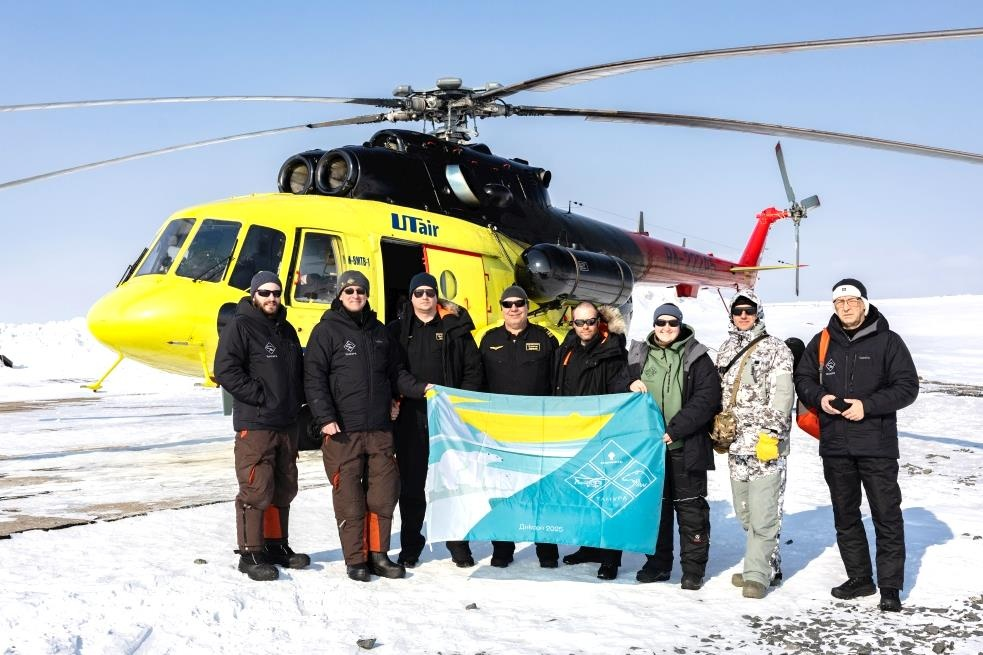
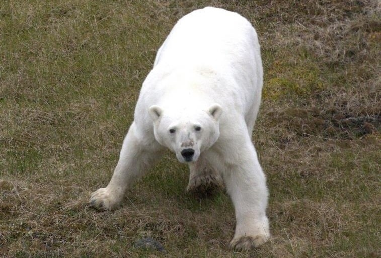
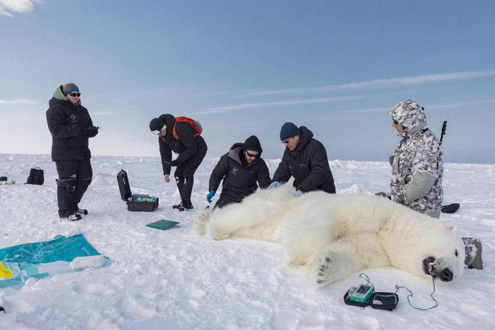
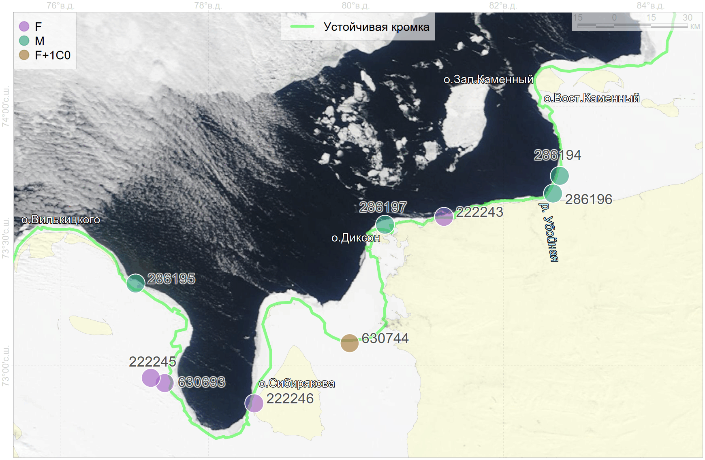
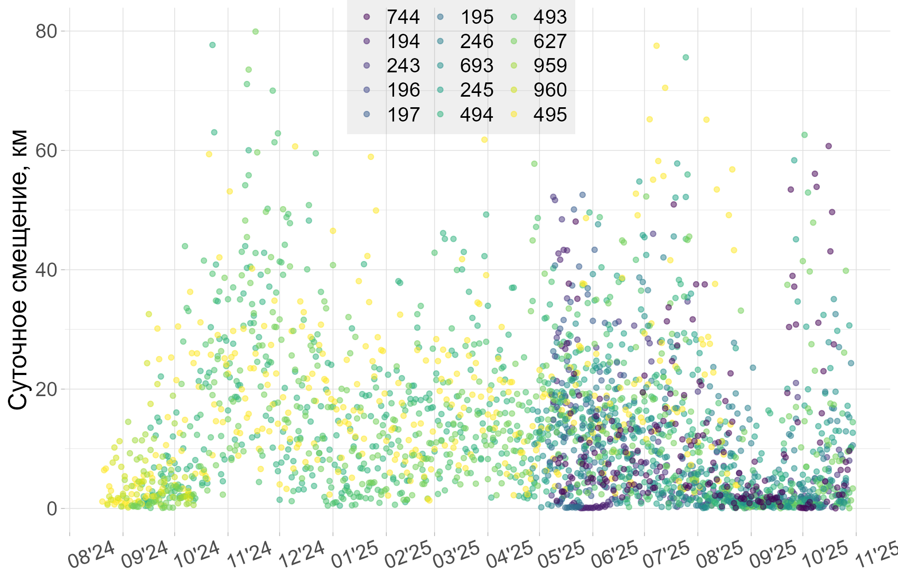
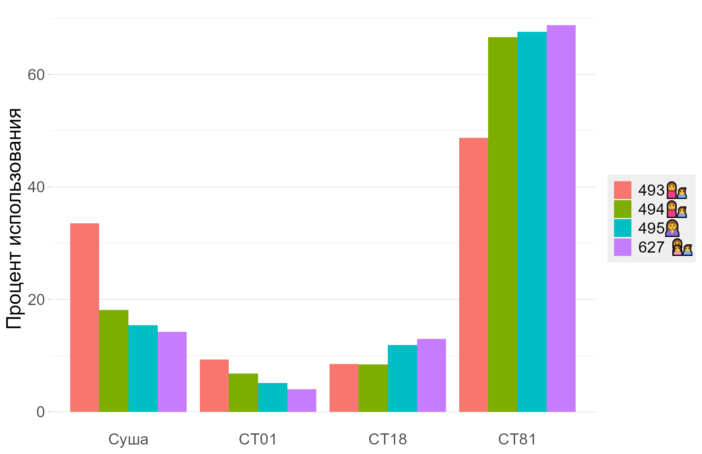
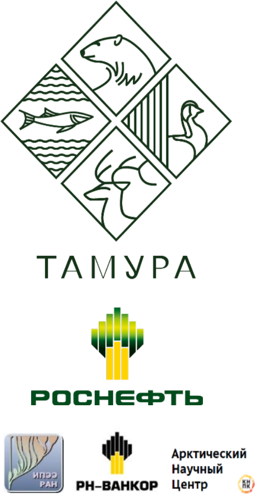

layout: true .toc.banner[ .sevinlogo[ ] .dontprint[ <img class="gif nothovered" src="assets/alltogether.gif"/> ] .shorttitle[ ] ] --- name: home class: metadata customtitle middle left giphy .toc.sidebar.left-column[ .outline[ # [Актуальность](#intro) # [Данные](#data) # [Результаты](#results) # [.pass[Обсуждение] ](#H19294) # [Выводы ](#Hc07f1) ] ] .toc.mainbar.right-column.scrollable[ .authors[ .author[.speaker[Платонов Н. Г.], Мордвинцев И. Н., Иванов Е. А., Артемьева С. М., Найденко С. В.] .institute[ИПЭЭ РАН] ] .title[ Анализ данных спутниковой биотелеметрии белых медведей Карского моря ] .subtitle[ ] .what[ IX научно-практическая конференция «Вселенная белого медведя» ] .where[ ] .when[ 28 февраля 2026 г. .updated[Обновлено: 2026-02-21 17:25] ] ] --- name: intro .toc.sidebar.left-column[ .outline[ # [Актуальность](#intro).fg[].bg[] # [Данные](#data).bg[] # [Результаты](#results).bg[] # [.pass[Обсуждение] ](#H19294).bg[] # [Выводы ](#Hc07f1).bg[] ] ] .toc.mainbar.right-column.scrollable[ .header.h1.broad[ <span class="generation">Актуальность</span> ] .fixprecode[ .pulling[ .pull-left-50[ + Выявление закономерностей распределения и поведения белых медведей в безледовый и ледовый периоды + Выявление абиотических факторов, формирующих предпочитаемые местообитания + Выявление влияния абиотических факторов на поведение + Определение мест залегания в родовые берлоги + Получение данных для осуществления моделирования ареалов ] .pull-right-50[ <img src="https://data.seaice.uni-bremen.de/amsr2/today/extent_n_running_mean_amsr2_previous.png" alt="" width="1330" height="700" zuntouchable hovered style="display: block; margin: auto auto auto 0;" /> <img src="https://nsidc.org/data/seaice_index/images/daily_images/N_iqr_timeseries.png" alt="" width="1330" height="700" zuntouchable hovered style="display: block; margin: auto auto auto 0;" /> ] ] ] ] --- name: data .toc.sidebar.left-column[ .outline[ # [Актуальность](#intro).bg[] # [Данные](#data).fg[].bg[] ## [Передатчики](#collars) ## [.pass[Отловы] ](#field2024) ## [Локации](#traj) # [Результаты](#results) # [.pass[Обсуждение] ](#H19294) # [Выводы ](#Hc07f1) ] ] .toc.mainbar.right-column.scrollable[ .header.h1.broad[ <span class="generation">Данные</span> ] .fixprecode[ .pulling[ .pull-left-65[ ## Отловы Обездвиживание с вертолёта: + 2024 г., безлёдный период, август-сентябрь. + 2025 г., ледовый период, апрель-май. ## Глубины и высоты Глобальная модель рельефа <span class="cite hovertext" data-hover="The GEBCO_2025 Grid - a continuous terrain model for oceans and land at 15 arc-second intervals"><a name=cite-GEBCO_2025></a>([GEBCO Bathymetric Compilation Group, 2025](#bib))</span>. ## Береговая линия Упрощенные полигоны суши <span class="cite hovertext" data-hover="Data Derived from OpenStreetMap for Download"><a name=cite-OpenStreetMapData></a>([Topf and Hormann, 2025](#bib))</span>. + Расстояние до берега ## Морской лёд Ледовые карты маргинальных зон (лёд умеренной сплоченности CT18, сплоченный лёд CT81) <span class="cite hovertext" data-hover="Daily Arctic Marginal Ice Zone (MIZ) and Overlay Shapefile"><a name=cite-USNIC_MIZ></a>([US NIC, 2022](#bib))</span>. ] .pull-right-35[    ] ] ] ] --- name: collars .toc.sidebar.left-column[ .outline[ # [Актуальность](#intro) # [Данные](#data).fg[] ## [Передатчики](#collars).fg[].bg[] ## [.pass[Отловы] ](#field2024).bg[] ## [Локации](#traj).bg[] # [Результаты](#results) # [.pass[Обсуждение] ](#H19294) # [Выводы ](#Hc07f1) ] ] .toc.mainbar.right-column.scrollable[ .header.h2.broad[ <span class="generation">Передатчики</span> .parent[.grand[Данные]] ] .fixprecode[ .row[ <div class="figure" style="text-align: left"> <img src="assets/Polar Bear Collar.jpg" alt="Спутниковый ошейник" width="1330" height="700" /> <p class="caption">Спутниковый ошейник</p> </div> <div class="figure" style="text-align: left"> <img src="assets/Ушная метка №1.jpg" alt="Ушная метка 2024 г." width="1330" height="700" /> <p class="caption">Ушная метка 2024 г.</p> </div> <div class="figure" style="text-align: left"> <img src="assets/Ушная метка №2.jpg" alt="Ушная метка 2025 г." width="1330" height="700" /> <p class="caption">Ушная метка 2025 г.</p> </div> ] ] ] --- name: field2024 .toc.sidebar.left-column[ .outline[ # [Актуальность](#intro) # [Данные](#data).fg[] ## [Передатчики](#collars) ## [.pass[Отловы] ](#field2024).fg[] ### [2024 г.](#field2024).fg[].bg[] ### [2025 г.](#field2025).bg[] ## [Локации](#traj) # [Результаты](#results) # [.pass[Обсуждение] ](#H19294) # [Выводы ](#Hc07f1) ] ] .toc.mainbar.right-column.scrollable[ .header.h3.broad[ <span class='outline generation'>Отловы 2024 г.</span> .parent[.grand[.pass[Отловы] .grand[Данные]]] ] .fixprecode[ <img src="assets/collar-2024.png" alt="" width="1330" height="700" style="display: block; margin: auto auto auto 0;" /> ] ] --- name: field2025 .toc.sidebar.left-column[ .outline[ # [Актуальность](#intro) # [Данные](#data).fg[] ## [Передатчики](#collars) ## [.pass[Отловы] ](#field2024).fg[] ### [2024 г.](#field2024).bg[] ### [2025 г.](#field2025) <span class="bullet bullet-active">[•](#field2025)</span><span class="bullet mslide10m">[•](#field2025s1)</span><span class="bullet mslide11m">[•](#field2025m)</span>.fg[].bg[] ## [Локации](#traj) # [Результаты](#results) # [.pass[Обсуждение] ](#H19294) # [Выводы ](#Hc07f1) ] ] .toc.mainbar.right-column.scrollable[ .header.h3.broad[ <span class='outline generation'>Отловы 2025 г.</span> .parent[.grand[.pass[Отловы] .grand[Данные]]] ] .fixprecode[ <img src="assets/collar-2025.png" alt="" width="1330" height="700" style="display: block; margin: auto auto auto 0;" /> ] ] --- name: field2025s1 .toc.sidebar.left-column[ .outline[ # [Актуальность](#intro) # [Данные](#data).fg[] ## [Передатчики](#collars) ## [.pass[Отловы] ](#field2024).fg[] ### [2024 г.](#field2024).bg[] ### [2025 г.](#field2025) <span class="bullet bullet">[•](#field2025)</span><span class="bullet bullet-active">[•](#field2025s1)</span><span class="bullet mslide11m">[•](#field2025m)</span>.fg[].bg[] ## [Локации](#traj) # [Результаты](#results) # [.pass[Обсуждение] ](#H19294) # [Выводы ](#Hc07f1) ] ] .toc.mainbar.right-column.scrollable[ .header.h3.broad[ <span class='outline generation'>Отловы 2025 г.</span> .parent[.grand[.pass[Отловы] .grand[Данные]]] ] .fixprecode[ <img src="assets/collar-2025-s1.png" alt="" width="1330" height="700" notinvertable style="display: block; margin: auto auto auto 0;" /> ] ] --- name: field2025m .toc.sidebar.left-column[ .outline[ # [Актуальность](#intro) # [Данные](#data).fg[] ## [Передатчики](#collars) ## [.pass[Отловы] ](#field2024).fg[] ### [2024 г.](#field2024).bg[] ### [2025 г.](#field2025) <span class="bullet bullet">[•](#field2025)</span><span class="bullet bullet">[•](#field2025s1)</span><span class="bullet bullet-active">[•](#field2025m)</span>.fg[].bg[] ## [Локации](#traj) # [Результаты](#results) # [.pass[Обсуждение] ](#H19294) # [Выводы ](#Hc07f1) ] ] .toc.mainbar.right-column.scrollable[ .header.h3.broad[ <span class='outline generation'>Отловы 2025 г.</span> .parent[.grand[.pass[Отловы] .grand[Данные]]] ] .fixprecode[  ] ] --- name: traj .toc.sidebar.left-column[ .outline[ # [Актуальность](#intro) # [Данные](#data).fg[] ## [Передатчики](#collars).bg[] ## [.pass[Отловы] ](#field2024).bg[] ## [Локации](#traj).fg[].bg[] # [Результаты](#results) # [.pass[Обсуждение] ](#H19294) # [Выводы ](#Hc07f1) ] ] .toc.mainbar.right-column.scrollable[ .header.h2.broad[ <span class="generation">Локации</span> .parent[.grand[Данные]] ] .fixprecode[ .pulling[ .pull-left-70[ #### Построение траектории + Фильтрация локаций по порогу скорости смещения <span class="cite hovertext" data-hover="A simple new algorithm to filter marine mammal Argos locations"><a name=cite-Argos-filter></a>([Freitas et al., 2008](#bib))</span>. + Исключение локаций вручную и повторение фильтрации + На 21 февраля 2026 г. для одной особи одна локация в море Лаптевых + Модель простого случайного блуждания <span class="cite hovertext" data-hover="Movement responses to environment: fast inference of variation among southern elephant seals with a mixed effects model"><a name=cite-Jonsen2019></a>([Jonsen et al., 2019](#bib))</span>, <span class="cite hovertext" data-hover="A continuous-time state-space model for rapid quality-control of Argos locations from animal-borne tags"><a name=cite-Jonsen2020></a>([Jonsen et al., 2020](#bib))</span> для построения ежесуточных локаций на 12:00 <abbr title="единое скоординированное время, единое время">UTC</abbr> #### Оценка длины шага суточного смещения + Фильтрация локаций по площади эллипса ошибки, прямолинейности перемещения и величине смещения. ] .pull-right-30[ <img src="assets/locfilter.png" alt="" width="1330" height="700" style="display: block; margin: auto auto auto 0;" /> ] ] ] ] --- name: results .toc.sidebar.left-column[ .outline[ # [Актуальность](#intro).bg[] # [Данные](#data).bg[] # [Результаты](#results).fg[].bg[] ## [Суточный ход ](#H8c4a3) ## [.pass[Морской лёд] ](#Hd073f) # [.pass[Обсуждение] ](#H19294) # [Выводы ](#Hc07f1) ] ] .toc.mainbar.right-column.scrollable[ .header.h1.broad[ <span class="generation">Результаты</span> ] .fixprecode[ .dontprint[ <img src="assets/alltogether.gif" alt="" width="1330" height="650" center style="display: block; margin: auto auto auto 0;" /> ] .font70.tableimg[ <table> <tbody> <tr> <td> <img untouchable class="nothovered" src="assets/track-222243.png"> <span class="inset map222243">243🙎</span> </td> <td> <img untouchable class="nothovered" src="assets/track-222245.png"> <span class="inset map222245">245🙎</span> </td> <td> <img untouchable class="nothovered" src="assets/track-222246.png"> <span class="inset map222246">246🙎</span> </td> <td> <img untouchable class="nothovered" src="assets/track-250493.png"> <span class="inset map250493">493👩👦</span> </td> </tr> <tr> <td> <img untouchable class="nothovered" src="assets/track-250494.png"> <span class="inset map250494">494👩👦</span> </td> <td> <img untouchable class="nothovered" src="assets/track-250495.png"> <span class="inset map250495">495🙎</span> </td> <td> <img untouchable class="nothovered" src="assets/track-268959.png"> <span class="inset map268959">959🙍♂️</span> </td> <td> <img untouchable class="nothovered" src="assets/track-268960.png"> <span class="inset map268960">960🙍♂️</span> </td> </tr> <tr> <td> <img untouchable class="nothovered" src="assets/track-286194.png"> <span class="inset map286194">194🙍♂️</span> </td> <td> <img untouchable class="nothovered" src="assets/track-286195.png"> <span class="inset map286195">195🙍♂️</span> </td> <td> <img untouchable class="nothovered" src="assets/track-286196.png"> <span class="inset map286196">196🙍♂️</span> </td> <td> <img untouchable class="nothovered" src="assets/track-286197.png"> <span class="inset map286197">197🙍♂️</span> </td> </tr> <tr> <td> <img untouchable class="nothovered" src="assets/track-630627.png"> <span class="inset map630627">627👩👧👦</span> </td> <td> <img untouchable class="nothovered" src="assets/track-630693.png"> <span class="inset map630693">693🙎</span> </td> <td> <img untouchable class="nothovered" src="assets/track-630744.png"> <span class="inset map630744">744👩👦</span> </td> <td> </td> </tr> </tbody> </table> ] ] ] --- name: H8c4a3 .toc.sidebar.left-column[ .outline[ # [Актуальность](#intro) # [Данные](#data) # [Результаты](#results).fg[] ## [Суточный ход ](#H8c4a3) <span class="bullet bullet-active">[•](#H8c4a3)</span><span class="bullet mslide15m">[•](#Hb9e98)</span>.fg[].bg[] ### [До берега](#Hc7d0b) ### [Глубины и высоты ](#Hbd329) ## [.pass[Морской лёд] ](#Hd073f) # [.pass[Обсуждение] ](#H19294) # [Выводы ](#Hc07f1) ] ] .toc.mainbar.right-column.scrollable[ .header.h2.broad[ <span class="generation">Суточный ход</span> .parent[.grand[Результаты]] ] .fixprecode[ <div class="figure" style="text-align: left">  <p class="caption">Суточное смещение в безлёдный период меньше</p> </div> ] ] --- name: Hb9e98 .toc.sidebar.left-column[ .outline[ # [Актуальность](#intro) # [Данные](#data) # [Результаты](#results).fg[] ## [Суточный ход ](#H8c4a3) <span class="bullet bullet">[•](#H8c4a3)</span><span class="bullet bullet-active">[•](#Hb9e98)</span>.fg[].bg[] ### [До берега](#Hc7d0b) ### [Глубины и высоты ](#Hbd329) ## [.pass[Морской лёд] ](#Hd073f) # [.pass[Обсуждение] ](#H19294) # [Выводы ](#Hc07f1) ] ] .toc.mainbar.right-column.scrollable[ .header.h2.broad[ <span class="generation">Суточный ход</span> .parent[.grand[Результаты]] ] .fixprecode[ <p class="caption centered">t-Критерий Уэлча суточного смещения</p> | |493👩👦 |494👩👦 |495🙎 |627👩👧👦 | |:------------------|:---------------------------------------------------|:---------------------------------------------------|:---------------------------------------------------|:---------------------------------------------------| |.collar[493👩👦] |**13.8** км/сут.<br>09/12-11/08<br>421/423 сут. |09/13-10/04<br>379 сут.</br>14.9⚔15.2<br>p=0.78 |09/12-08/24<br>345 сут.</br>15.8⚔18.7<br>p**=0.01** |09/17-11/08<br>347 сут.</br>15.1⚔16.0<br>p=0.37 | |.collar[494👩👦] |09/13-10/04<br>379 сут.</br>15.2⚔14.9<br>p=0.78 |**15.2** км/сут.<br>09/13-10/04<br>381/387 сут. |09/13-08/24<br>346 сут.</br>16.5⚔18.7<br>p**=0.03** |09/17-10/04<br>310 сут.</br>16.3⚔15.8<br>p=0.65 | |.collar[495🙎] |09/12-08/24<br>345 сут.</br>18.7⚔15.8<br>p**=0.01** |09/13-08/24<br>346 сут.</br>18.7⚔16.5<br>p**=0.03** |**17.6** км/сут.<br>08/20-08/24<br>370/370 сут. |09/06-08/23<br>294 сут.</br>18.1⚔16.0<br>p**=0.05** | |.collar[627👩👧👦] |09/17-11/08<br>347 сут.</br>16.0⚔15.1<br>p=0.37 |09/17-10/04<br>310 сут.</br>15.8⚔16.3<br>p=0.65 |09/06-08/23<br>294 сут.</br>16.0⚔18.1<br>p**=0.05** |**15.7** км/сут.<br>09/06-11/08<br>355/429 сут. | <span class="dontprint"> <span class="inset map250493">493👩👦</span> <span class="inset map250494">494👩👦</span> <span class="inset map250495">495🙎</span> <span class="inset map630627">627👩👧👦</span> </span> ] ] --- name: Hc7d0b .toc.sidebar.left-column[ .outline[ # [Актуальность](#intro) # [Данные](#data) # [Результаты](#results).fg[] ## [Суточный ход ](#H8c4a3).fg[] ### [До берега](#Hc7d0b).fg[].bg[] ### [Глубины и высоты ](#Hbd329).bg[] ## [.pass[Морской лёд] ](#Hd073f) # [.pass[Обсуждение] ](#H19294) # [Выводы ](#Hc07f1) ] ] .toc.mainbar.right-column.scrollable[ .header.h3.broad[ <span class='outline generation'>Расстояние до берега</span> .parent[.grand[Суточный ход .grand[Результаты]]] ] .fixprecode[ <div class="figure" style="text-align: left"> <img src="assets/daily-between-dist2land.png" alt="Отсечки: 1 км вглубь суши, береговая линия, 5 км акватории" width="1330" height="700" /> <p class="caption">Отсечки: 1 км вглубь суши, береговая линия, 5 км акватории</p> </div> .formula[ Pearson's product-moment correlation <br> `\(\rho(log(\text{daily}), log(|\text{dist2land}|))=0.43\)`, `\(p<0.001\)`. ] ] ] --- name: Hbd329 .toc.sidebar.left-column[ .outline[ # [Актуальность](#intro) # [Данные](#data) # [Результаты](#results).fg[] ## [Суточный ход ](#H8c4a3).fg[] ### [До берега](#Hc7d0b).bg[] ### [Глубины и высоты ](#Hbd329).fg[].bg[] ## [.pass[Морской лёд] ](#Hd073f) # [.pass[Обсуждение] ](#H19294) # [Выводы ](#Hc07f1) ] ] .toc.mainbar.right-column.scrollable[ .header.h3.broad[ <span class="generation">Глубины и высоты</span> .parent[.grand[Суточный ход .grand[Результаты]]] ] .fixprecode[ <div class="figure" style="text-align: left"> <img src="assets/daily-between-gebco.png" alt="Отсечки: глубина 15 м, уровень моря, высота 10 м" width="1330" height="700" /> <p class="caption">Отсечки: глубина 15 м, уровень моря, высота 10 м</p> </div> .formula[ Pearson's product-moment correlation <br> `\(\rho(log(\text{daily}), \text{gebco})=-0.34\)`, `\(p<0.001\)`. ] ] ] --- name: Hd073f .toc.sidebar.left-column[ .outline[ # [Актуальность](#intro) # [Данные](#data) # [Результаты](#results).fg[] ## [Суточный ход ](#H8c4a3) ## [.pass[Морской лёд] ](#Hd073f).fg[] ### [Ландшафты ](#Hd073f).fg[].bg[] ### [Ландш.градиент](#Hbde20).bg[] # [.pass[Обсуждение] ](#H19294) # [Выводы ](#Hc07f1) ] ] .toc.mainbar.right-column.scrollable[ .header.h3.broad[ <span class="generation">Ландшафты</span> .parent[.grand[.pass[Морской лёд] .grand[Результаты]]] ] .fixprecode[ <div class="figure" style="text-align: left">  <p class="caption">Предпочитаемые категории льда и суши</p> </div> <span class="dontprint"> <span class="inset map250495">495🙎</span> <span class="inset map630627">627👩👧👦</span> <span class="inset map250493">493👩👦</span> <span class="inset map250494">494👩👦</span> </span> ] ] --- name: Hbde20 .toc.sidebar.left-column[ .outline[ # [Актуальность](#intro) # [Данные](#data) # [Результаты](#results).fg[] ## [Суточный ход ](#H8c4a3) ## [.pass[Морской лёд] ](#Hd073f).fg[] ### [Ландшафты ](#Hd073f).bg[] ### [Ландш.градиент](#Hbde20).fg[].bg[] # [.pass[Обсуждение] ](#H19294) # [Выводы ](#Hc07f1) ] ] .toc.mainbar.right-column.scrollable[ .header.h3.broad[ <span class='outline generation'>Ландшафтный градиент</span> .parent[.grand[.pass[Морской лёд] .grand[Результаты]]] ] .fixprecode[ <img src="assets/icetype-between-CT81-edge01.png" alt="" width="1330" height="700" style="display: block; margin: auto auto auto 0;" /> ] ] --- name: H19294 .toc.sidebar.left-column[ .outline[ # [Актуальность](#intro) # [Данные](#data) # [Результаты](#results) # [.pass[Обсуждение] ](#H19294).fg[] ## [Ледовый сезон ](#H19294).fg[].bg[] ## [Фенология ](#H9a26f).bg[] ## [Моделирование](#maxent).bg[] # [Выводы ](#Hc07f1) ] ] .toc.mainbar.right-column.scrollable[ .header.h2.broad[ <span class="generation">Ледовый сезон</span> .parent[.grand[.pass[Обсуждение]]] ] .fixprecode[ <div class="figure" style="text-align: left"> <img src="assets/icydays-natice-CT81.png" alt="foo bar" width="1330" height="700" /> <p class="caption">Около 11 % .bbox[акватории] меньше полугода покрыто cплоченным льдом</p> </div> ] ] ??? Выражена зона припайного льда. --- name: H9a26f .toc.sidebar.left-column[ .outline[ # [Актуальность](#intro) # [Данные](#data) # [Результаты](#results) # [.pass[Обсуждение] ](#H19294).fg[] ## [Ледовый сезон ](#H19294).bg[] ## [Фенология ](#H9a26f).fg[].bg[] ## [Моделирование](#maxent).bg[] # [Выводы ](#Hc07f1) ] ] .toc.mainbar.right-column.scrollable[ .header.h2.broad[ <span class="generation">Фенология</span> .parent[.grand[.pass[Обсуждение]]] ] .fixprecode[ <div class="figure" style="text-align: left"> <img src="assets/hutuda1.png" alt="Перемещение самки белого медведя в 2012 г., наложенное на фенологическую карту вскрытия ледового покрова <a name=cite-Rozhnov2017_hutuda_ru></a>([Рожнов и др., 2017](#bib)). Цветовая легенда единая для участков траектории и для фенокарты." width="1330" height="700" /> <p class="caption">Перемещение самки белого медведя в 2012 г., наложенное на фенологическую карту вскрытия ледового покрова <a name=cite-Rozhnov2017_hutuda_ru></a>(<a href='#bib'>Рожнов и др., 2017</a>). Цветовая легенда единая для участков траектории и для фенокарты.</p> </div> .pulling[ .pull-left-70[ ] .pull-right-30[ ] ] ] ] --- name: maxent .toc.sidebar.left-column[ .outline[ # [Актуальность](#intro) # [Данные](#data) # [Результаты](#results) # [.pass[Обсуждение] ](#H19294).fg[] ## [Ледовый сезон ](#H19294).bg[] ## [Фенология ](#H9a26f).bg[] ## [Моделирование](#maxent).fg[].bg[] # [Выводы ](#Hc07f1) ] ] .toc.mainbar.right-column.scrollable[ .header.h2.broad[ <span class="generation">Моделирование</span> .parent[.grand[.pass[Обсуждение]]] ] .fixprecode[ <div class="figure" style="text-align: left"> <img src="assets/forecast-20250422-maxent.png" alt="Построение региональных моделей пригодности местообитаний белого медведя c использованием данных биотелеметрии" width="1330" height="490" /> <p class="caption">Построение региональных моделей пригодности местообитаний белого медведя c использованием данных биотелеметрии</p> </div> Ковариаты на основе норвежских ледовых карт <span class="cite hovertext" data-hover="Ice Service charts"><a name=cite-cryometno></a>([Norwegian Ice Service, 2023](#bib))</span>. ] ] --- name: Hc07f1 .toc.sidebar.left-column[ .outline[ # [Актуальность](#intro).bg[] # [Данные](#data).bg[] # [Результаты](#results).bg[] # [.pass[Обсуждение] ](#H19294).bg[] # [Выводы ](#Hc07f1).fg[].bg[] ] ] .toc.mainbar.right-column.scrollable[ .header.h1.broad[ <span class="generation">Выводы</span> ] .fixprecode[ + Суточное смещение меньше в безлёдный период. + Наименьшее суточное смещение в километровой полосе береговой линии. Суточное смещение увеличивается при удалении 5 км и больше от берега + Наименьшее суточное смещение в береговой зоне с высотами до 10 м. На высотах до 250 м суточное смещение увеличивается. На глубинах более 15 метров значение суточного смещения высокое. + За период более 11 месяцев суточное смещение одиночной самки выше суточного смещения самок с детенышами. Достоверность такого отличия может быть принята по уровню 0.05. + Не отмечается приверженности кромки льда, как для белых медведей Баренцева моря + Не отмечается заходов белых медведей на лёд глубоководного бассейна + Продолжительность ледового сезона создает благоприятные условия для благополучия беломедвежьей субпопуляции Карсого моря ] ] --- name: bib class: notable .notfootnote.small.scrollable.bibliography[ .fixprecode[ <div class="backtoshow"><a href="javascript:window.history.back();">↩</a></div> <a name=bib-Argos-filter></a>[Freitas, C., C. Lydersen, M. A. Fedak, and K. M. Kovacs](#bib) (2008). "A simple new algorithm to filter marine mammal Argos locations". In: _Marine Mammal Science_ 24.3, pp. 315-325. DOI: [10.1111/j.1748-7692.2007.00180.x](https://doi.org/10.1111%2Fj.1748-7692.2007.00180.x). <a name=bib-GEBCO_2025></a>[GEBCO Bathymetric Compilation Group](#bib) (2025). _The GEBCO_2025 Grid - a continuous terrain model for oceans and land at 15 arc-second intervals_. En. DOI: [10.5285/37C52E96-24EA-67CE-E063-7086ABC05F29](https://doi.org/10.5285%2F37C52E96-24EA-67CE-E063-7086ABC05F29). URL: [https://www.gebco.net/data-products-gridded-bathymetry-data/gebco2025-grid](https://www.gebco.net/data-products-gridded-bathymetry-data/gebco2025-grid) (visited on Oct. 06, 2025). <a name=bib-Jonsen2019></a>[Jonsen, I. D., C. R. McMahon, T. A. Patterson, M. Auger-Méthé, R. G. Harcourt, M. A. Hindell, and S. Bestley](#bib) (2019). "Movement responses to environment: fast inference of variation among southern elephant seals with a mixed effects model". In: _Ecology_ 100, p. e02566. DOI: [10.1002/ecy.2566](https://doi.org/10.1002%2Fecy.2566). <a name=bib-Jonsen2020></a>[Jonsen, I. D., T. A. Patterson, D. P. Costa, P. D. Doherty, B. J. Godley, W. J. Grecian, C. Guinet, X. Hoenner, S. S. Kienle, P. W. Robinson, S. C. Votier, S. Whiting, M. J. Witt, M. A. Hindell, R. G. Harcourt, and C. R. McMahon](#bib) (2020). "A continuous-time state-space model for rapid quality-control of Argos locations from animal-borne tags". In: _Movement Ecology_ 8, p. 31. DOI: [10.1186/s40462-020-00217-7](https://doi.org/10.1186%2Fs40462-020-00217-7). <a name=bib-cryometno></a>[Norwegian Ice Service](#bib) (2023). _Ice Service charts_. URL: [https://cryo.met.no/en/latest-ice-charts](https://cryo.met.no/en/latest-ice-charts) (visited on May. 10, 2023). <a name=bib-OpenStreetMapData></a>[Topf, J. and C. Hormann](#bib) (2025). _Data Derived from OpenStreetMap for Download_. Under the Open Database License "ODbL" by the OpenStreetMap Foundation. Large simplified polygons not split. Updated 2025-02-14T11:51. URL: [https://osmdata.openstreetmap.de/data/land-polygons.html](https://osmdata.openstreetmap.de/data/land-polygons.html) (visited on Feb. 14, 2025). <a name=bib-USNIC_MIZ></a>[US NIC](#bib) (2022). _Daily Arctic Marginal Ice Zone (MIZ) and Overlay Shapefile_. URL: [https://usicecenter.gov/Products/ArcticData](https://usicecenter.gov/Products/ArcticData) (visited on Apr. 05, 2022). <a name=bib-Rozhnov2017_hutuda_ru></a>[Рожнов, В., Н. Платонов, С. Найденко, И. Мордвинцев, and Е. Иванов](#bib) (2017). "Перемещение самки белого медведя в Карском море в период летнего таяния льда". In: _Доклады Академии наук_, pp. 359-363. DOI: [10.7868/S0869565217030276](https://doi.org/10.7868%2FS0869565217030276). <a name=bib-Sorokin2023></a>[Сорокин, П., Е. Звычайная, Е. Иванов, И. Мизин, И. Мордвинцев, Н. Платонов, А. Исаченко, Р. Лазарева, and В. Рожнов](#bib) (2023). "Генетическая структура популяции белого медведя (_Ursus maritimus_) в морях российской Арктики". In: _Генетика_ 59.12, p. 1393–1406. DOI: [10.31857/S0016675823120123](https://doi.org/10.31857%2FS0016675823120123). ] ] --- name: beforefinalizing name: atlas .toc.sidebar.left-column[ .outline[ # [Актуальность](#intro) # [Данные](#data) # [Результаты](#results) # [.pass[Обсуждение] ](#H19294) # [Выводы ](#Hc07f1) ] ] .toc.mainbar.right-column.scrollable[ .pulling[ .pull-left-65[ ### Благодарности + **ПАО «НК «Роснефть»** + **ООО «РН-Ванкор»** + Экипажи вертолётов UTair + Компания «Эс-Пас» + Заповедник «Большой Арктический» + Администрация п.г.т. Дикcон ] .pull-right-35[ .alltogether[  ] ] ] .footer[ Разрешения Росприроднадзора на добывание объектов животного мира, занесенных в Красную книгу РФ: № 013 от 06.03.2024 и № 002 от 04.03.2024, № Р027-00113-77/01894740 от 20.02.2025 и № Р074-00113-77/01894667 от 20.02.2025. Этические стандарты в соответствии с протоколами № 37 от 25 мая 2020 г. и № 37а от 19 марта 2024 г. Комитета по этике ИПЭЭ РАН. Обеспечение данных в п.г.т. Диксон: Анна Быкова, Борис Соловьёв, Дарья Кузнецова, Полина Ильина, Иван Котлов, Хосе Антонио Фернандес-Бланко. Утилита для получения данных Argos: Дмитрий Сальман. Фотографии по проекту «Тамура»: Денис Зыбин ] ]